1. 首頁 Homepage
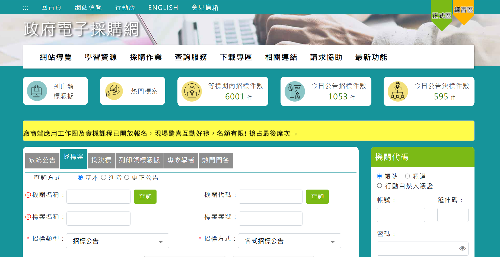
中文這是政府電子採購網首頁, 點選廠商代碼下方的「廠商帳號申請」的連結。
ENThis is the homepage of the Government Electronic Procurement System, and you can click the "Vendor Account Application" link below the vendor code.
1-1. 註冊與登入 Registration & Login
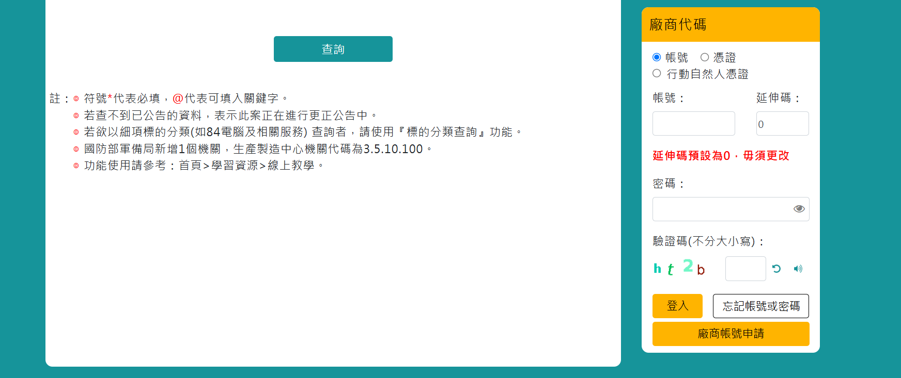
ENTo register, click the "Vendor Account Application" link. To log in, enter your account number and password. The extension code defaults to 0.
The registration link is: https://web.pcc.gov.tw/raam/generalBusiRegistration/init
The registration link is: https://web.pcc.gov.tw/raam/generalBusiRegistration/init
2. 廠商帳號註冊 Vendor Account Registration
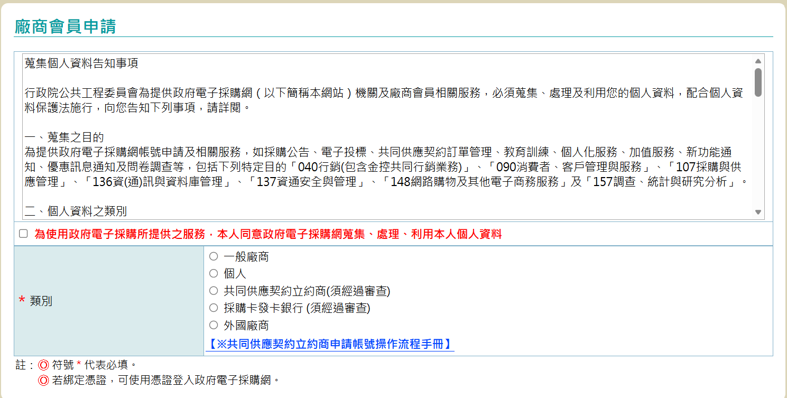
中文廠商帳號註冊，依照個人資料保護法規定，需要同意個人資料蒐集使用。
若為第一次使用政府電子採購網，類別可選擇個人或外國廠商。
若為第一次使用政府電子採購網，類別可選擇個人或外國廠商。
ENVendor account registration requires consent to the collection and use of personal data under the Personal Data Protection Act.
If it is your first time using the Government e-Procurement System, you can select "Individual" or "Foreign Vendor" as the account type.
If it is your first time using the Government e-Procurement System, you can select "Individual" or "Foreign Vendor" as the account type.
2-1. 填寫註冊資料 Enter Registration Information
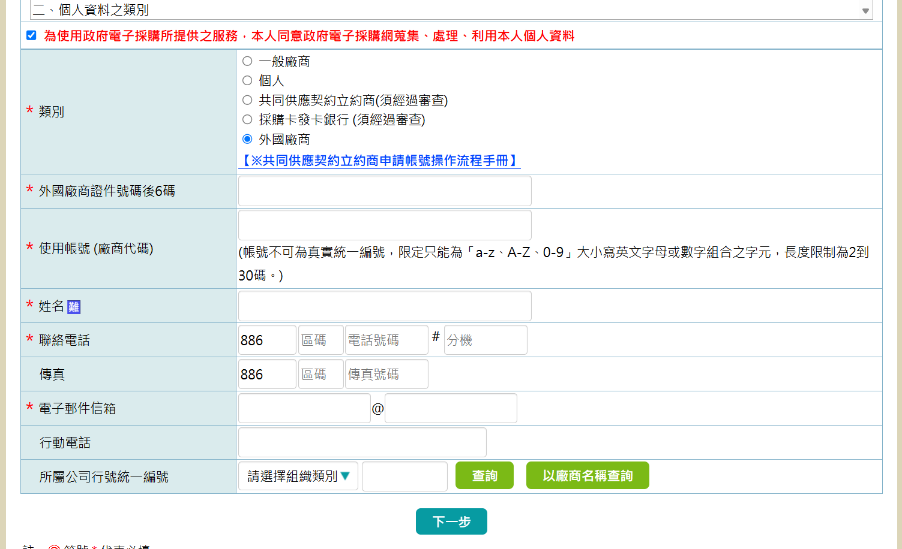
中文以外國廠商為例。
外國廠商證件後6碼：可填寫護照號碼或居留證號碼，若無護照或居留證號碼，則可填寫其他有效證件號碼。
注意：此後六碼僅作為忘記註冊email時取回帳號時驗證使用
使用帳號：限定只能為「a-z、A-Z、0-9」大小寫英文字母或數字組合之字元，長度限制為2到30碼，系統會自動檢核是否重複，若重複則無法註冊成功。
姓名：填寫First Name及Last Name。
連絡電話：欄位僅供系統或客服人員聯繫使用，不會有任何驗證。
傳真：可不填。
電子郵件信箱：請填寫可收取電子郵件的信箱，系統會寄送驗證信至此信箱，請務必填寫正確的電子郵件信箱。
注意：此電子郵件信箱作為忘記密碼時取回帳號時驗證使用
行動電話：可不填。
所屬公司行號統一編號：可不填，此為台灣公司於登記時所取得之統一編號。
外國廠商證件後6碼：可填寫護照號碼或居留證號碼，若無護照或居留證號碼，則可填寫其他有效證件號碼。
注意：此後六碼僅作為忘記註冊email時取回帳號時驗證使用
使用帳號：限定只能為「a-z、A-Z、0-9」大小寫英文字母或數字組合之字元，長度限制為2到30碼，系統會自動檢核是否重複，若重複則無法註冊成功。
姓名：填寫First Name及Last Name。
連絡電話：欄位僅供系統或客服人員聯繫使用，不會有任何驗證。
傳真：可不填。
電子郵件信箱：請填寫可收取電子郵件的信箱，系統會寄送驗證信至此信箱，請務必填寫正確的電子郵件信箱。
注意：此電子郵件信箱作為忘記密碼時取回帳號時驗證使用
行動電話：可不填。
所屬公司行號統一編號：可不填，此為台灣公司於登記時所取得之統一編號。
ENFor foreign vendors
Foreign vendor identification number (last six digits): Enter the last six digits of your passport or residence permit. If you do not have a passport or residence permit number, enter the number of another valid identity document.
Note: These six digits are used to verify account recovery when you forget the registered email address.
Account name: Use only uppercase or lowercase English letters (a-z, A-Z) and numbers (0-9), with a length of 2 to 30 characters. The system automatically checks whether the account name is already in use.
Name: Enter your first name and last name.
Contact telephone number: This field is used only for contact by the system or customer service staff and is not subject to verification.
Fax: Optional.
Email address: Enter an address that can receive email. The system will send a verification email to this address, so make sure it is correct.
Note: This email address is used to verify account recovery when you forget your password.
Mobile phone: Optional.
Company registration number: Optional. This is the unified business number assigned to companies registered in Taiwan.
Foreign vendor identification number (last six digits): Enter the last six digits of your passport or residence permit. If you do not have a passport or residence permit number, enter the number of another valid identity document.
Note: These six digits are used to verify account recovery when you forget the registered email address.
Account name: Use only uppercase or lowercase English letters (a-z, A-Z) and numbers (0-9), with a length of 2 to 30 characters. The system automatically checks whether the account name is already in use.
Name: Enter your first name and last name.
Contact telephone number: This field is used only for contact by the system or customer service staff and is not subject to verification.
Fax: Optional.
Email address: Enter an address that can receive email. The system will send a verification email to this address, so make sure it is correct.
Note: This email address is used to verify account recovery when you forget your password.
Mobile phone: Optional.
Company registration number: Optional. This is the unified business number assigned to companies registered in Taiwan.
2-2. 確認註冊資料 Confirm Registration Information
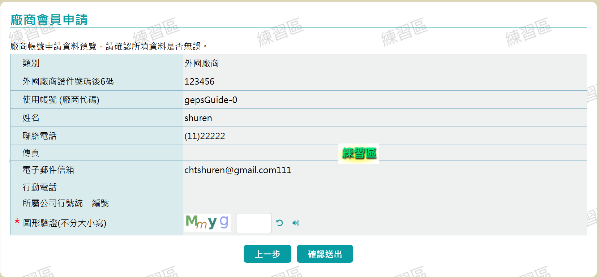
中文請確認欄位上所填資訊是否正確。
確認正確後填入驗證碼，並按下「確認送出」按鈕，稍後您註冊的email信箱將收到由 hitops@hibox.hinet.net 所寄送的啟用信函，請點選信件內連結並變更密碼。
確認正確後填入驗證碼，並按下「確認送出」按鈕，稍後您註冊的email信箱將收到由 hitops@hibox.hinet.net 所寄送的啟用信函，請點選信件內連結並變更密碼。
ENCheck that all entered information is correct. Enter the verification code and click "Confirm and Submit". Your registered email address will receive an activation email from hitops@hibox.hinet.net. Click the link in the email to change your password.
2-3. 開啟驗證信件 Open the Verification Email
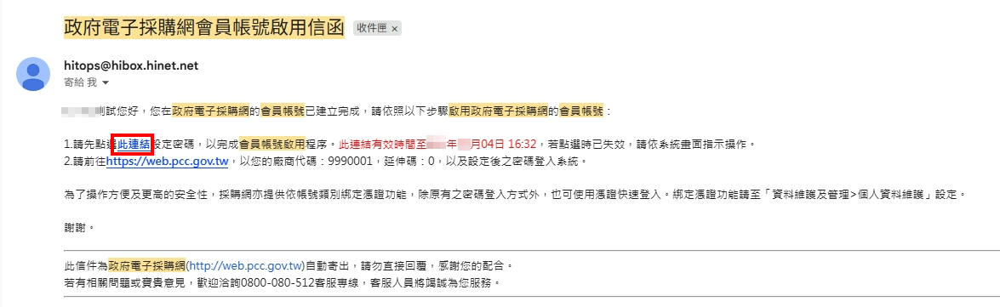
中文請點選信件內之連結，並變更密碼。
注意：信件內連結具時效性，若逾時未啟用，則需要改用忘記密碼功能進行變更密碼。
注意：信件內連結具時效性，若逾時未啟用，則需要改用忘記密碼功能進行變更密碼。
ENClick the link in the email and change your password.
Note: The link is valid for a limited time. If it expires before activation, use the Forgot Password function to change your password.
Note: The link is valid for a limited time. If it expires before activation, use the Forgot Password function to change your password.
2-4. 變更密碼 Change Password
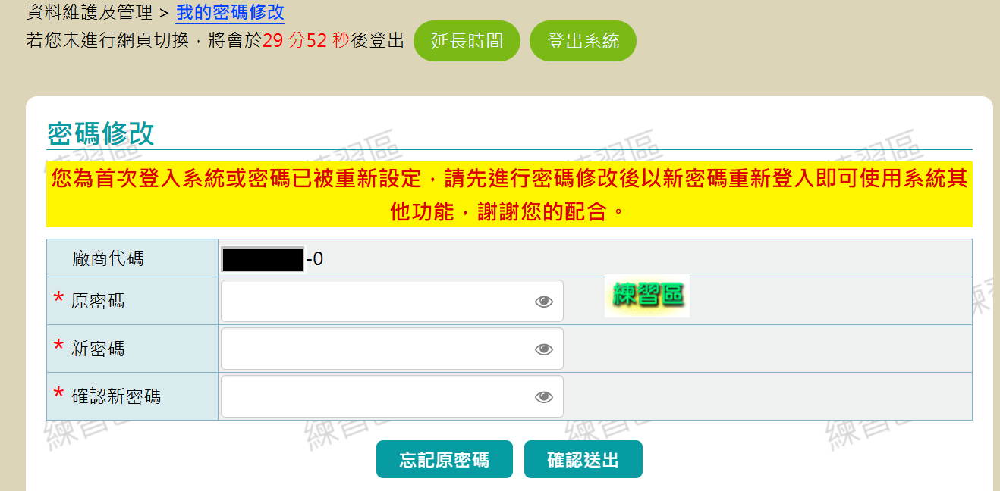
中文密碼遵循以下規則：
密碼長度至少8碼，並且須含英文大寫、英文小寫、數字及特殊符號(僅限!@#$%^&*())四項。
密碼設定不能與前3次使用過之密碼相同。
變更完畢後會出現「密碼修改成功，請以新密碼重新登入。」
隨後請使用新密碼登入系統，若忘記密碼，請使用忘記密碼功能進行變更密碼。
密碼長度至少8碼，並且須含英文大寫、英文小寫、數字及特殊符號(僅限!@#$%^&*())四項。
密碼設定不能與前3次使用過之密碼相同。
變更完畢後會出現「密碼修改成功，請以新密碼重新登入。」
隨後請使用新密碼登入系統，若忘記密碼，請使用忘記密碼功能進行變更密碼。
ENThe password must be at least 8 characters long and include uppercase letters, lowercase letters, numbers, and special characters (limited to !@#$%^&*()). It cannot be the same as any of the previous 3 passwords.
After the change is complete, the message "Password changed successfully. Please log in again with your new password." will appear. Use the new password to log in. If you forget it, use the Forgot Password function to change it.
After the change is complete, the message "Password changed successfully. Please log in again with your new password." will appear. Use the new password to log in. If you forget it, use the Forgot Password function to change it.
3. 招標公告搜尋與電子領標 Tender Search & Document Download
3. 搜尋招標公告 Search Tender Notices
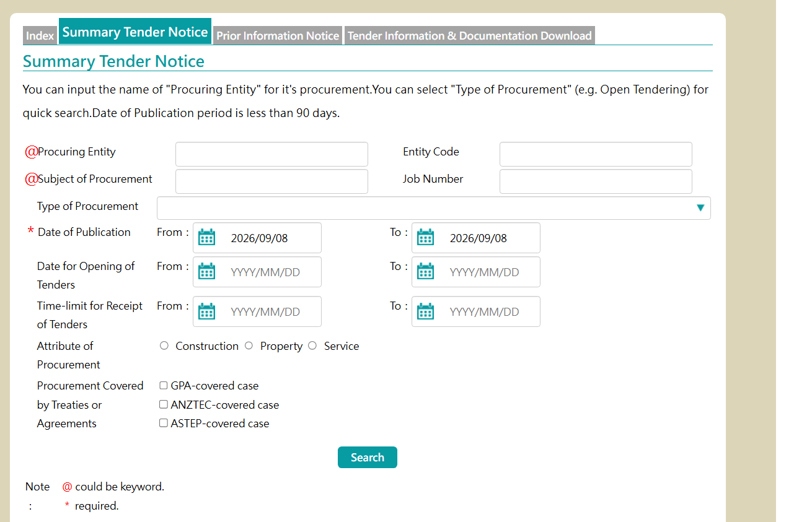
中文本系統預設以當日日期為基準，自動執行招標公告之檢索作業。本次查詢參數設定如下：
公告日期區間：2026 年 09 月 08 日 至 2026 年 09 月 08 日。
公告日期區間：2026 年 09 月 08 日 至 2026 年 09 月 08 日。
ENBy default, the system executes the search for tender notices based on the current date. The parameters for this query are set as follows:
Notice Date Range: September 08, 2026 - September 08, 2026.
Notice Date Range: September 08, 2026 - September 08, 2026.
3-1. 招標公告摘要 Tender Notice Summary
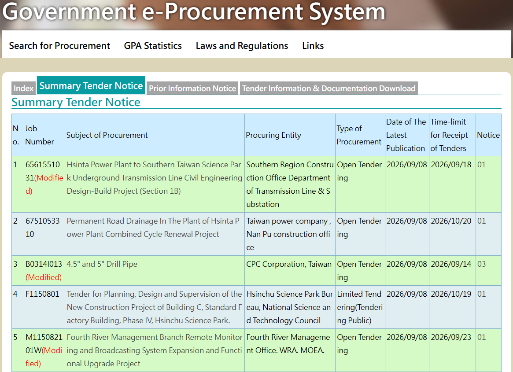
中文系統將依照條件自動檢索招標公告，並將結果以「標案名稱」及「公告日期」等欄位資訊呈現於列表中。
請點擊目標「標案名稱」超連結，以進入詳細頁面並執行電子領標作業。
請點擊目標「標案名稱」超連結，以進入詳細頁面並執行電子領標作業。
ENThe system automatically searches tender notices according to the specified criteria and displays the results in a list, including fields such as the tender name and announcement date.
Click the target tender name hyperlink to open the details page and proceed with downloading the tender documents electronically.
Click the target tender name hyperlink to open the details page and proceed with downloading the tender documents electronically.
3-2. 電子領標 Download Tender Documents
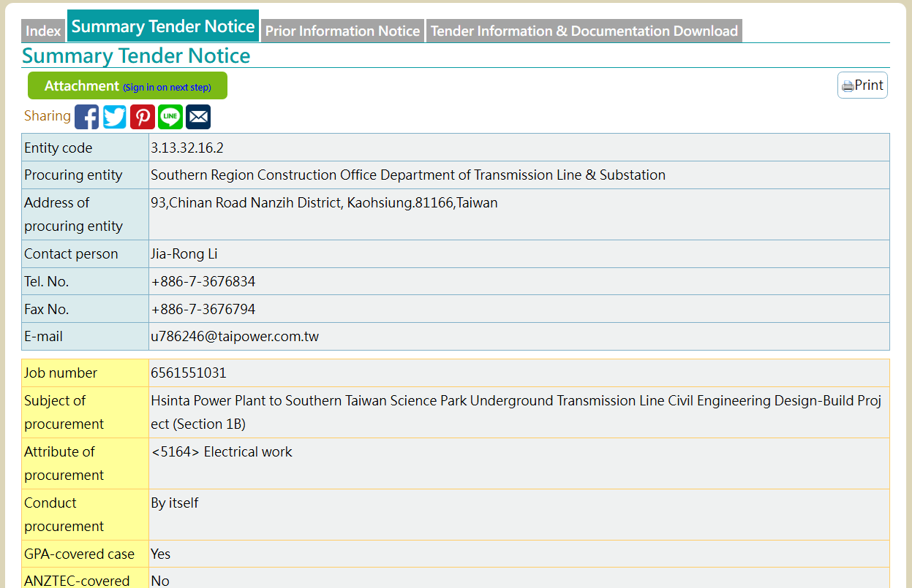
中文如果您需要下載招標文件，請點擊綠色按鈕，以開始執行電子領標作業。
注意：此動作需要登入廠商帳號以及付費。
注意：此動作需要登入廠商帳號以及付費。
ENPlease click the green button "Attachment" to initiate the electronic tender document procurement process.
Note: This action requires logging in with a vendor account and payment.
Note: This action requires logging in with a vendor account and payment.
3-3. 登入 Login
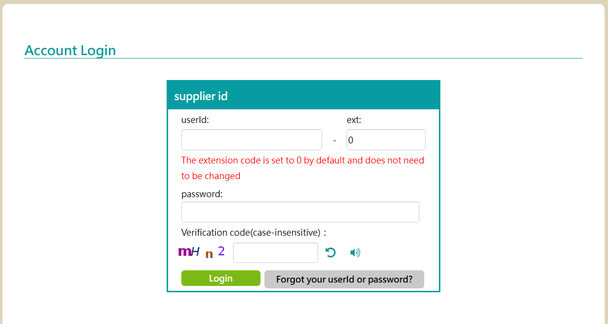
中文請執行系統登入作業，並依序輸入您的使用者帳號、密碼及驗證碼，延伸碼預設為0。
ENPlease proceed with system authentication by entering your Account ID, Password, and Verification Code. The extension code is set to 0 by default.
3-4. 電子領標憑據提醒 Tender Receipt Reminder
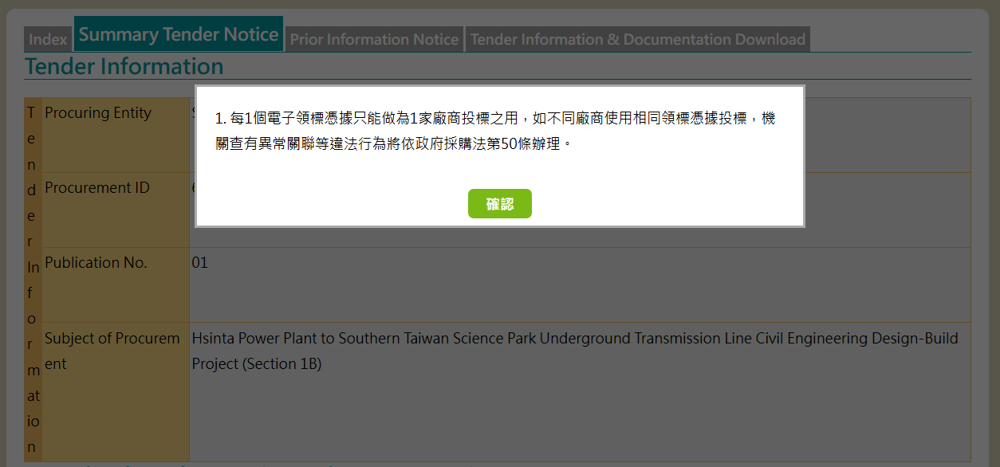
中文1.每一個電子領標憑據只能做為一家廠商投標之用，如不同廠商使用相同領標憑據投標，機關查有異常關聯等違法行為將為依政府採購法第50條辦理。
注意：請勿多個廠商皆使用同樣的領標憑據進行投標
上述說明內容已清楚呈現。如您已閱讀並理解相關規定，請點擊綠色「確認」按鈕以繼續下一步作業。
注意：請勿多個廠商皆使用同樣的領標憑據進行投標
上述說明內容已清楚呈現。如您已閱讀並理解相關規定，請點擊綠色「確認」按鈕以繼續下一步作業。
ENEach electronic tender receipt may be used to submit a bid for only one vendor. If different vendors use the same tender receipt to bid, the procuring entity may handle the case under Article 50 of the Government Procurement Act if it finds an abnormal connection or other unlawful conduct.
Note: Do not allow multiple vendors to submit bids using the same tender receipt.
The above information has been clearly presented. After reading and understanding these rules, click the green "Confirm" button to continue.
Note: Do not allow multiple vendors to submit bids using the same tender receipt.
The above information has been clearly presented. After reading and understanding these rules, click the green "Confirm" button to continue.
3-5. 領標說明 Tender Document Instructions
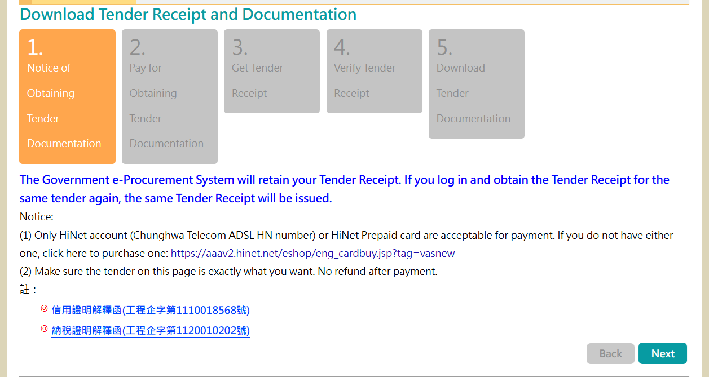
中文步驟1.領標說明
系統將會依照廠商帳號保留領標紀錄，後續登入將可以直接下載文件及取得領標憑據。
請注意，若您使用不同的廠商帳號登入，將無法取得先前的領標紀錄及憑據。
系統將會依照廠商帳號保留領標紀錄，後續登入將可以直接下載文件及取得領標憑據。
請注意，若您使用不同的廠商帳號登入，將無法取得先前的領標紀錄及憑據。
ENStep 1. Tender document instructions
The system retains tender document download records under the vendor account. When you log in again, you can download the documents and obtain the tender receipt directly.
Please note that if you log in with a different vendor account, you will not be able to access the previous download records or tender receipt.
The system retains tender document download records under the vendor account. When you log in again, you can download the documents and obtain the tender receipt directly.
Please note that if you log in with a different vendor account, you will not be able to access the previous download records or tender receipt.
3-6. 領標付費 Pay for Tender Documents
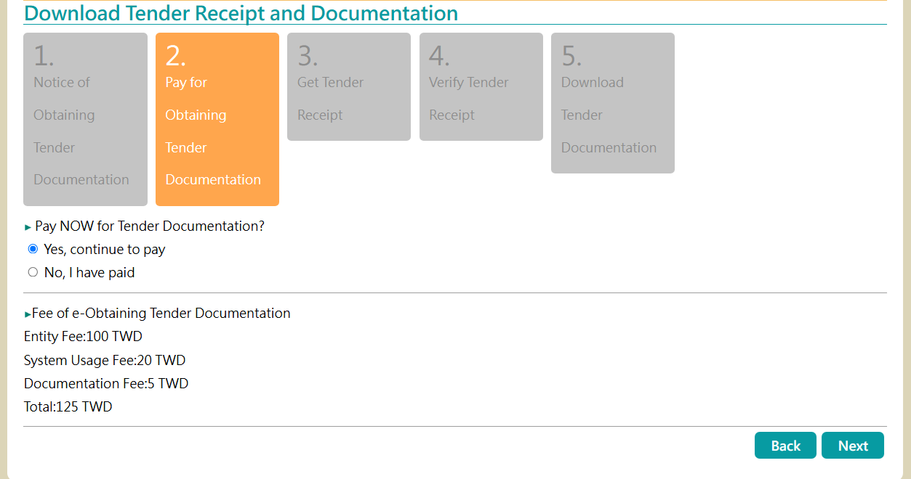
中文步驟 2. 領標付費
點選 Yes, continue to pay 進入付費頁面，付款成功後網頁會轉導至步驟 3。
點選 Yes, continue to pay 進入付費頁面，付款成功後網頁會轉導至步驟 3。
ENStep 2. Pay for downloading the tender documents
Click "Yes, continue to pay" to open the payment page. After payment succeeds, the webpage will redirect to Step 3.
Click "Yes, continue to pay" to open the payment page. After payment succeeds, the webpage will redirect to Step 3.
3-7. 付款 Payment
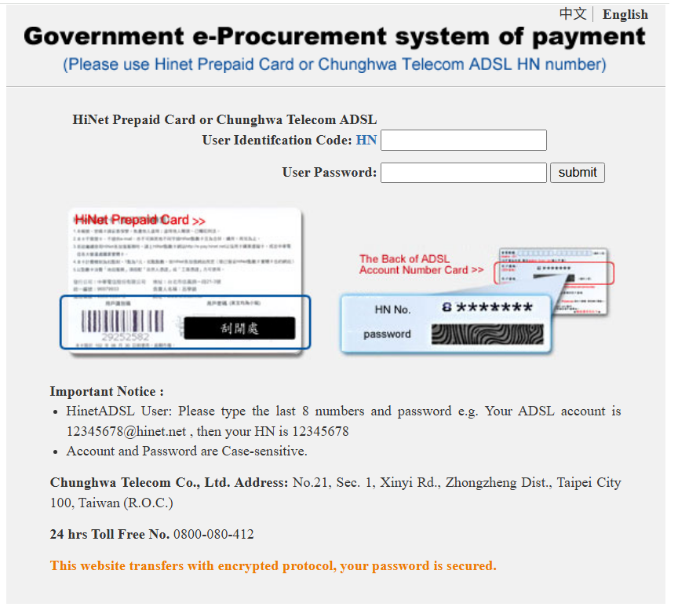
中文請輸入您的中華電信 ADSL 帳號及密碼進行線上付款，或使用已購買之點數卡完成繳費程序。
如果從未購買過點數卡，請先購買中華電信點數卡，可以透過以下網址進行付費，會取得一組序號及密碼，請妥善保管。
點數卡網址：https://aaav2.hinet.net/eshop/eng_cardbuy.jsp?tag=vasnew
如果從未購買過點數卡，請先購買中華電信點數卡，可以透過以下網址進行付費，會取得一組序號及密碼，請妥善保管。
點數卡網址：https://aaav2.hinet.net/eshop/eng_cardbuy.jsp?tag=vasnew
ENEnter your Chunghwa Telecom ADSL account and password to pay online, or use a purchased prepaid card to complete the payment.
If you have never purchased a prepaid card, purchase one from Chunghwa Telecom first through the following URL. You will receive a serial number and password; keep them secure.
Prepaid card URL: https://aaav2.hinet.net/eshop/eng_cardbuy.jsp?tag=vasnew
If you have never purchased a prepaid card, purchase one from Chunghwa Telecom first through the following URL. You will receive a serial number and password; keep them secure.
Prepaid card URL: https://aaav2.hinet.net/eshop/eng_cardbuy.jsp?tag=vasnew
3-8. 下載領標憑據 Download Tender Receipt
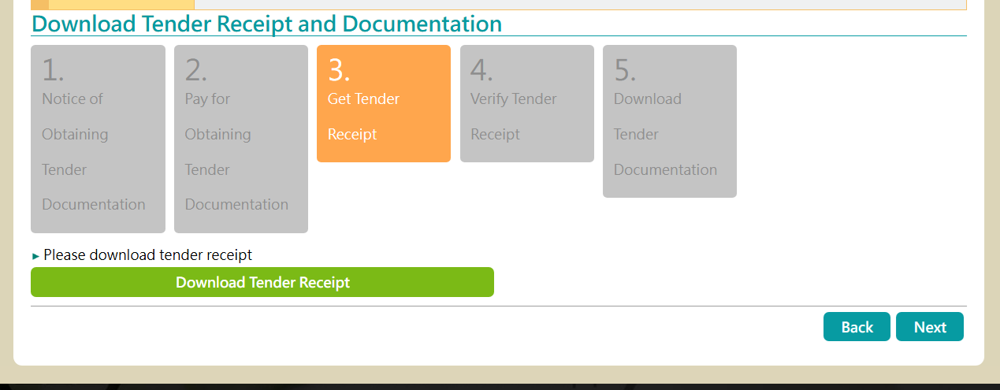
中文電子領標憑證檔（副檔名為 .tkn）下載完成後，預設將儲存於系統之使用者下載目錄中。其標準檔案路徑如下：
C:\Users\<使用者帳號>\Downloads\<檔名>.tkn
注意：請將 <使用者帳號> 替換為您登入 Windows 系統之實際帳戶名稱。
C:\Users\<使用者帳號>\Downloads\<檔名>.tkn
注意：請將 <使用者帳號> 替換為您登入 Windows 系統之實際帳戶名稱。
ENUpon completion of the download, the electronic tender receipt certificate (file extension .tkn) will be saved by default in your system's User Downloads folder. The standard file path is as follows:
C:\Users\<Username>\Downloads\<Filename>.tkn
Note: Please replace <Username> with your actual Windows account name.
C:\Users\<Username>\Downloads\<Filename>.tkn
Note: Please replace <Username> with your actual Windows account name.
3-9. 下載招標文件 Download Tender Documentation
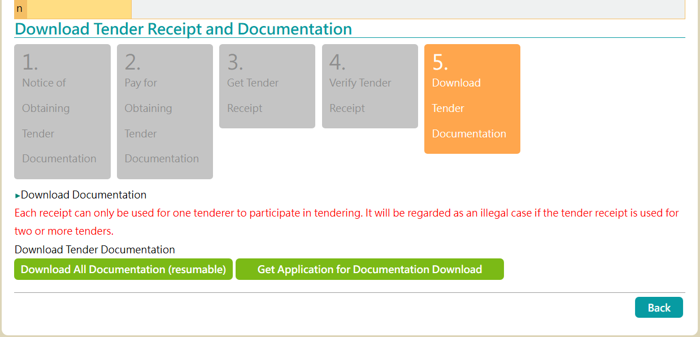
中文首次下載招標文件者，請先下載並安裝電子領標程式。完成安裝後，即可下載招標文件；已安裝電子領標程式者，可直接進行招標文件下載。
注意：此應用程式僅支援 Windows 系統，且會於電腦開啟時自動啟動並檢查更新，若有更新將提示使用者進行更新。
注意：此應用程式僅支援 Windows 系統，且會於電腦開啟時自動啟動並檢查更新，若有更新將提示使用者進行更新。
ENFor first-time users, please download and install the Electronic Tendering Application before downloading the tender documents. Once the application has been installed, you may proceed with the document download. Users who have already installed the application may download the tender documents directly.
Note: This application is only supported on Windows systems. It will automatically launch and check for updates when the computer is turned on. If an update is available, the user will be prompted to update the application.
Note: This application is only supported on Windows systems. It will automatically launch and check for updates when the computer is turned on. If an update is available, the user will be prompted to update the application.
3-10-1. 安裝應用程式 Install the Application
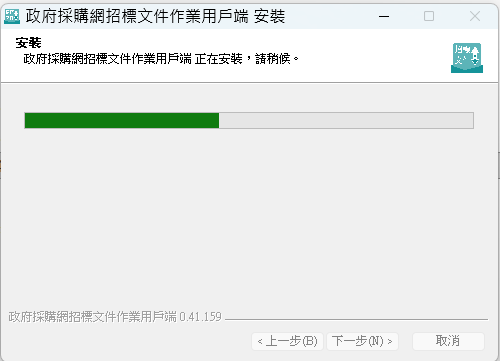
中文政府電子採購網招標文件作業用戶端正在安裝中，請稍候。安裝完成後請按「完成」。
ENThe Government e-Procurement Tender Document Application Client is currently being installed. Please wait while the installation process is completed.
3-10-2. 完成安裝 Finish Installing the Application
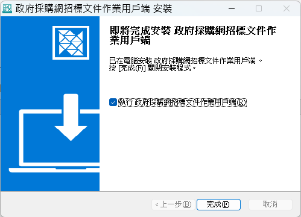
中文安裝政府採購網招標文件作業用戶端安裝完成，請按完成。
ENThe installation of the Government e-Procurement Tender Document Application Client has been completed successfully. Please click the "Finish" button to exit the setup wizard and proceed to the next step.
3-11. 下載全部文件 Download All Documentation
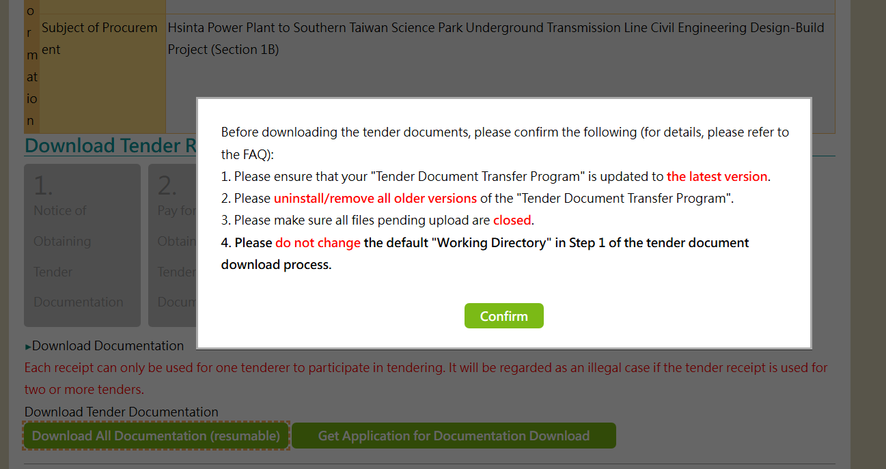
中文點選「全部下載」，並詳閱相關規定及作業說明。
ENPlease click “Download All Document(resumable)” and carefully review the relevant requirements and operating instructions before proceeding with the subsequent steps.
3-12. 允許應用程式存取 Allow Application Access
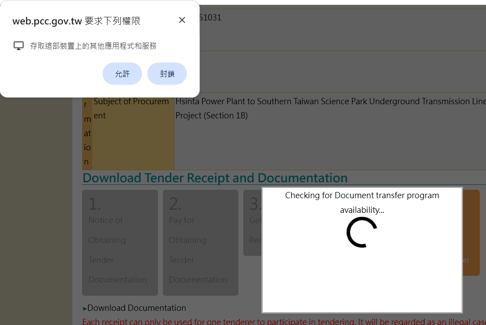
中文請允許 web.pcc.gov.tw 存取所需之裝置功能、應用程式及相關服務權限，並同意開啟彈跳視窗。
ENPlease allow web.pcc.gov.tw to access the required device features, applications, and related services, and enable pop-up windows to ensure proper system functionality and the successful completion of subsequent operations.
3-13. 一般設定 General Settings
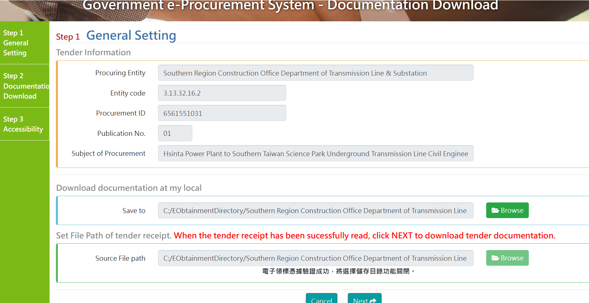
中文本頁提供標案基本資訊及招標文件存放目錄，請確認相關內容及文件儲存位置，以利後續下載、檢閱及使用。
如非必要請勿任意更動，系統將會檢查工作目錄是否已有其他檔案，還請確認目錄內容以避免覆蓋。
如非必要請勿任意更動，系統將會檢查工作目錄是否已有其他檔案，還請確認目錄內容以避免覆蓋。
ENThis page provides the tender information and the directory for storing tender documents. Please verify the relevant details and document storage location for subsequent downloading, review, and use.
Please do not make any changes unless necessary. The system will check if there are other files in the working directory. Please confirm the directory contents to avoid overwriting files.
Please do not make any changes unless necessary. The system will check if there are other files in the working directory. Please confirm the directory contents to avoid overwriting files.
3-14. 招標文件下載 Tender Documentation Download
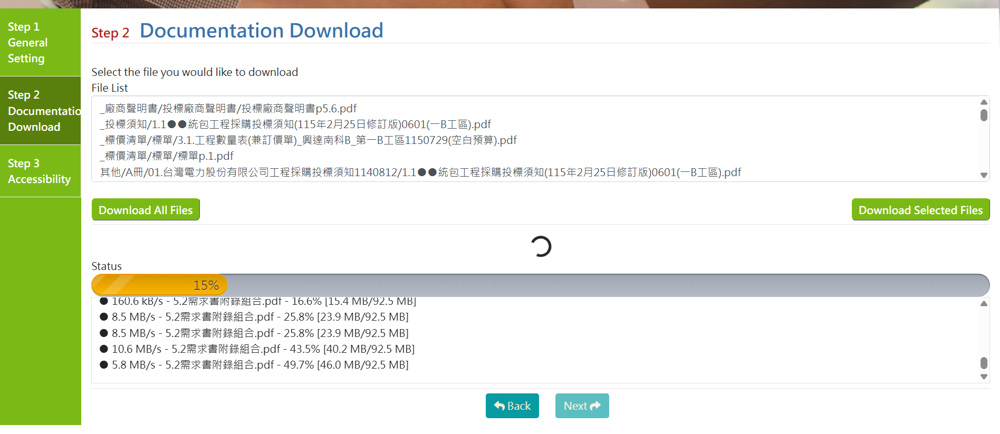
中文本頁列示招標文件清單，您可選擇「全部下載」或依需求個別下載文件。黃色進度條顯示各文件之下載進度百分比，請確認所有文件下載完成後再進行後續作業。
ENThis page displays the list of tender documents. You may choose to download all documents at once or download individual files as needed. The yellow progress bar indicates the download completion percentage for each document. Please ensure all required documents have been downloaded successfully before proceeding to the next step.
3-15. 完成招標文件下載 Finish Downloading Documentation
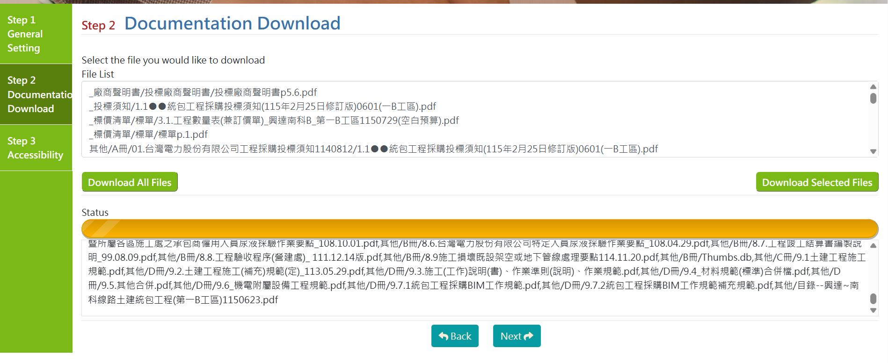
中文所有招標文件已下載完成。點選「下一步」以繼續後續作業。
ENAll tender documents have been downloaded successfully.Then click “Next” to proceed to the subsequent steps.
3-16. 無障礙功能 Accessibility
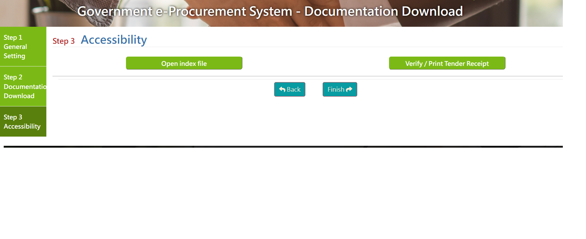
中文您可開啟索引檔瀏覽招標文件內容(3-17)，或驗證/列印電子領標憑據之內容(3-18)。
ENYou may open the index file to review the contents of the tender documents (3-17), or verify and print Tender Receipt to confirm the accuracy and validity of the tendering information (3-18).
3-17. 開啟索引檔 Open the Index File
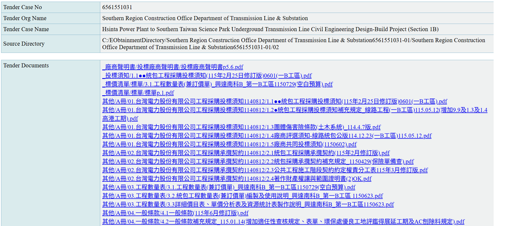
中文索引檔提供招標文件內容之目錄與連結，方便您快速查閱各項文件資料及相關資訊。
ENThe index file provides a directory and links to the tender document contents, enabling quick access to individual documents and related information.
3-18. 驗證領標憑據 Verify Tender Receipt
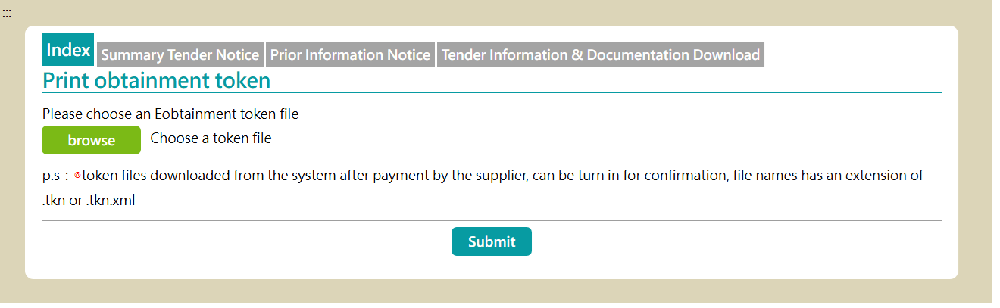
中文可以檢驗領標憑據，請上傳領標憑據檔案(副檔名為.tkn)，系統將自動進行驗證。
ENYou can verify a tender receipt by uploading the tender receipt file with the
.tkn extension. The system will verify it automatically.
3-19. 瀏覽領標憑據 Browse Tender Receipt
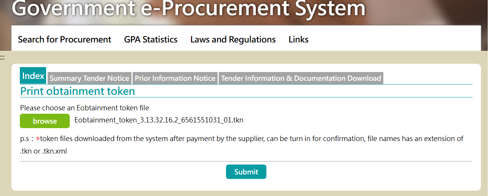
中文上傳後會顯示所上傳的檔名，確認後系統將進行驗證。
ENAfter uploading, the uploaded file name will be displayed. After you confirm it, the system will verify the file.
3-20. 領標憑據資訊 Tender Receipt Information
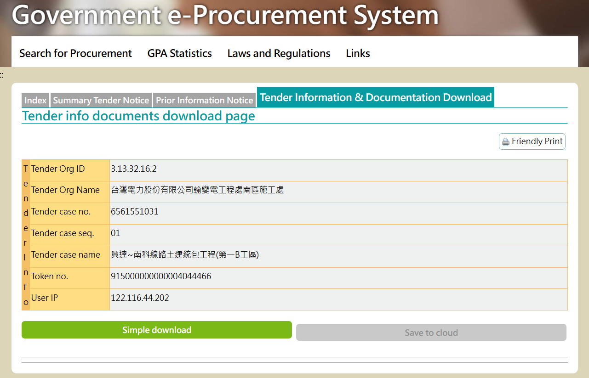
中文此頁將顯示領標憑據資訊，若您有意願投標，招標機關可能會要求提供此畫面，以證明確實有進行領標作業。
ENThis page displays the tender receipt information. If you intend to bid, the tendering authority may request this screen to verify that the tender receipt process has been completed.